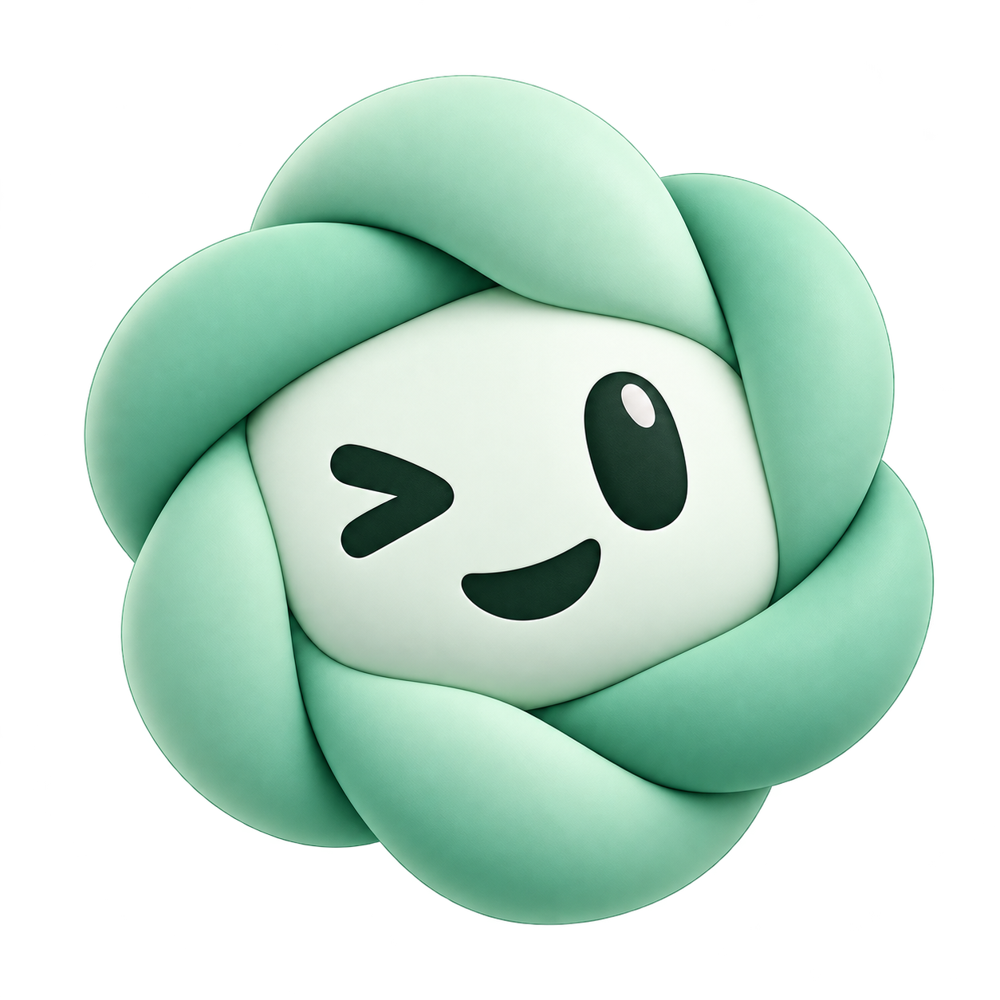
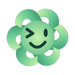

← CodexbotUm novo rosto para o Codexbot
Toque em qualquer imagem para ampliar. Os quatro arquivos têm fundo transparente; o fundo verde-claro aparece apenas nesta página para facilitar a comparação.
O novo ícone oficial
O verde entrelaçado da opção 1 com a expressão divertida da opção 4. A animação SVG é uma versão simplificada: só as bordas giram, enquanto o rosto pisca e sorri.
Ícone oficial

Carregando · versão animada

Explorações anteriores